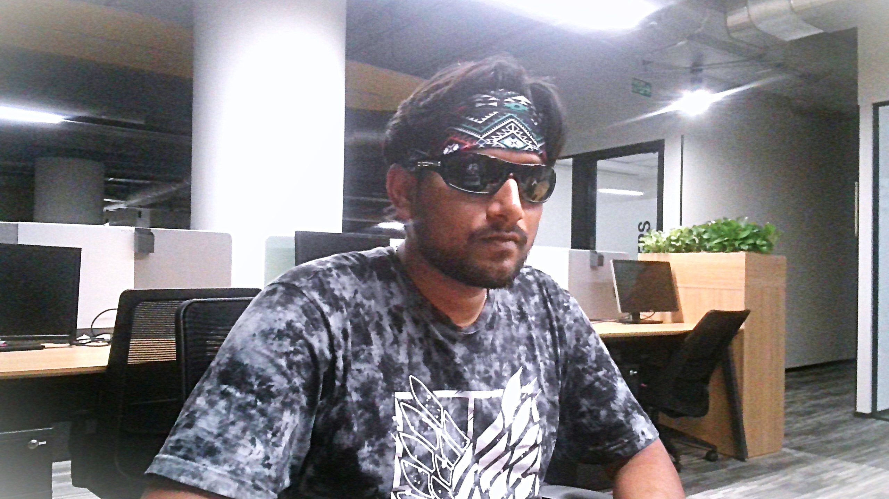

<div class="align-items-center default-container">
    <div class="col-lg-8">
        <div class="content">
            <div class="content-left">
                <h2 class="default-topic">About me.</h2>
                <p class="default-p">
                    My name is Tushar Ranjan Singh, and I enjoy <span class="default-highlight">creating software out of an idea</span>.
                </p>
                <p>
                    
                </p>
                <p class="default-p">
                    I am a Software Developer from India. I am fluent in English, although Hindi is my native language. 
                </p>
                <p class="default-p">My interest in software development started back in 2017 with my college education in Computer Engineering and 
                    it gradually became an obsession. Solving problems 
                    through code introduced me to the world of <span class="default-highlight">programming</span>, 
                    <span class="default-highlight">logic</span>, and <span class="default-highlight">automation</span>. 
                    The following year, I returned to college to study computer science and landed my 
                    <span class="default-highlight">first job in the tech industry</span>.
                </p>
                <p class="default-p">
                    Fast-forward to today, and I've had the privilege of working with amazing people in the tech industry.
                </p>
                <p class="default-p">
                    I've had the chance to work with a range of <span class="default-highlight">technologies</span> and developed valuable 
                    <span class="default-highlight">soft skills</span>, including leading transformative changes to improve 
                    team dynamics and organizational culture within a tech company. My technical knowledge has expanded 
                    through hands-on collaboration with developers and rigorous study of documentation. Over time, I've gained experience 
                    with programming logic, refined software craftsmanship, contributed to the development of 
                    <span class="default-highlight">websites</span> and built <span class="default-highlight">REST APIs</span>, 
                    collaborated on building visual dashboards, <span class="default-highlight">scrapers</span>, 
                    <span class="default-highlight">crawlers</span>, and participated in retrieving and processing data 
                    from various sources.
                </p>
                <p class="default-p">
                    I've worked with teams to adopt <span class="default-highlight">microservices architectures</span> using tools like
                    <span class="default-highlight">Docker</span>, <span class="default-highlight">Kubernetes</span>, <span class="default-highlight">Rancher</span>, 
                    and <span class="default-highlight">ArgoCD</span>. I've also been part of efforts to develop and maintain asynchronous systems 
                    with <span class="default-highlight">Kafka</span> and optimizing CI/CD pipelines mainly using 
                    <span class="default-highlight">Azure DevOps</span> and YAML configurations with hands on experience on
                    <span class="default-highlight">Helm Charts</span> and <span class="default-highlight">Kubernetes Manifest</span>
                </p>
                <p class="default-p">
                    PLACEHOLDER FOR EXPERTIES AS BACKEND
                </p>
                <p class="default-p">
                   PLACEHOLDER FOR EXPERTIES AS FRONTEND
                </p>
                <p class="default-p">
                    Now, we've covered the professional side. On a personal note, here are a few things about me: I'm passionate about  
                    <span class="default-highlight">Tech-Events</span>, <span class="default-highlight">purpose-driven organizations</span>,  
                    a good cup of chai, sensible brainstorming, <span class="default-highlight">teamwork</span>,  
                    <span class="default-highlight">science fiction</span> and <span class="default-highlight">suspense</span>, <span class="default-highlight">instrumental music</span>, physics and math, and the joy of community experiences. 
                    I wish I could tell you how much I love philosophy and the stories of explorers. When traveling, I enjoy documenting my 
                    <span class="default-highlight">whereabouts</span> and <span class="default-highlight">experiences</span>,  
                    so I can revisit them later.
                </p>                   
                <p class="default-p">
                    I am continuously learning and adapting to new technologies and methodologies. 
                    My goal is to create efficient, scalable, and user-friendly <span class="default-highlight">software solutions 
                    that make a difference</span>. Whether it's front-end development, back-end services, or full-stack applications, 
                    I am <span class="default-highlight">passionate about every aspect of software development</span>.
                </p>
                <p class="default-p">
                    Now that you've read this far, let me wrap this up with a final thought.
                </p>
                <p class="default-p">
                    Humankind is a species that constantly pushes the boundaries of technology. We are explorers at heart. 
                    I take great pleasure in contributing to our <span class="default-highlight">shared story</span> from the frontier of tech.
                </p>
            </div>
            <div class="content">
                <div class="content-left">
                    <h2 class="default-topic">Reach out.</h2>
                    <p class="default-p">
                        Follow me on social media, check out my GitHub account for projects, or <span class="default-highlight">reach out to arrange a meeting</span>.
                        I would be happy to discuss how my <span class="default-highlight">problem-solving skills</span> can help address the challenges you are facing.
                    </p>
                    <button>
                        <a routerLink="/contact" class="a-green">
                            > Contact me
                        </a>
                    </button>
                </div>
            </div>
        </div>
    </div>
</div>
